Meet Mrs. Wife, her goal is it to live like a 1950’s housewife. And you can help her achieve it!
Pick and choose your schedule for the day. Think and act like the perfect Tradwife to win.

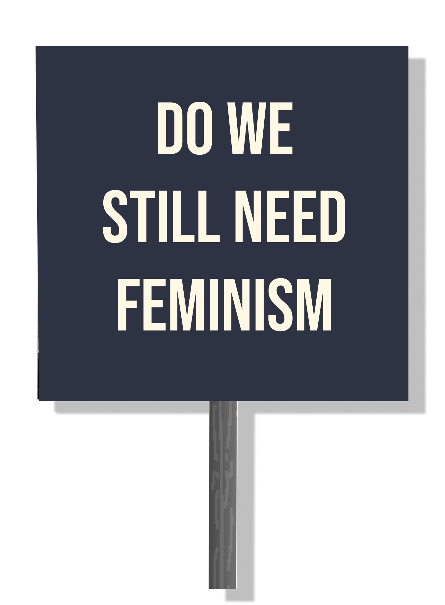
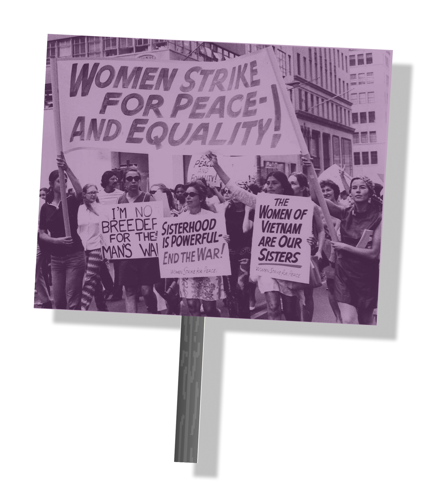
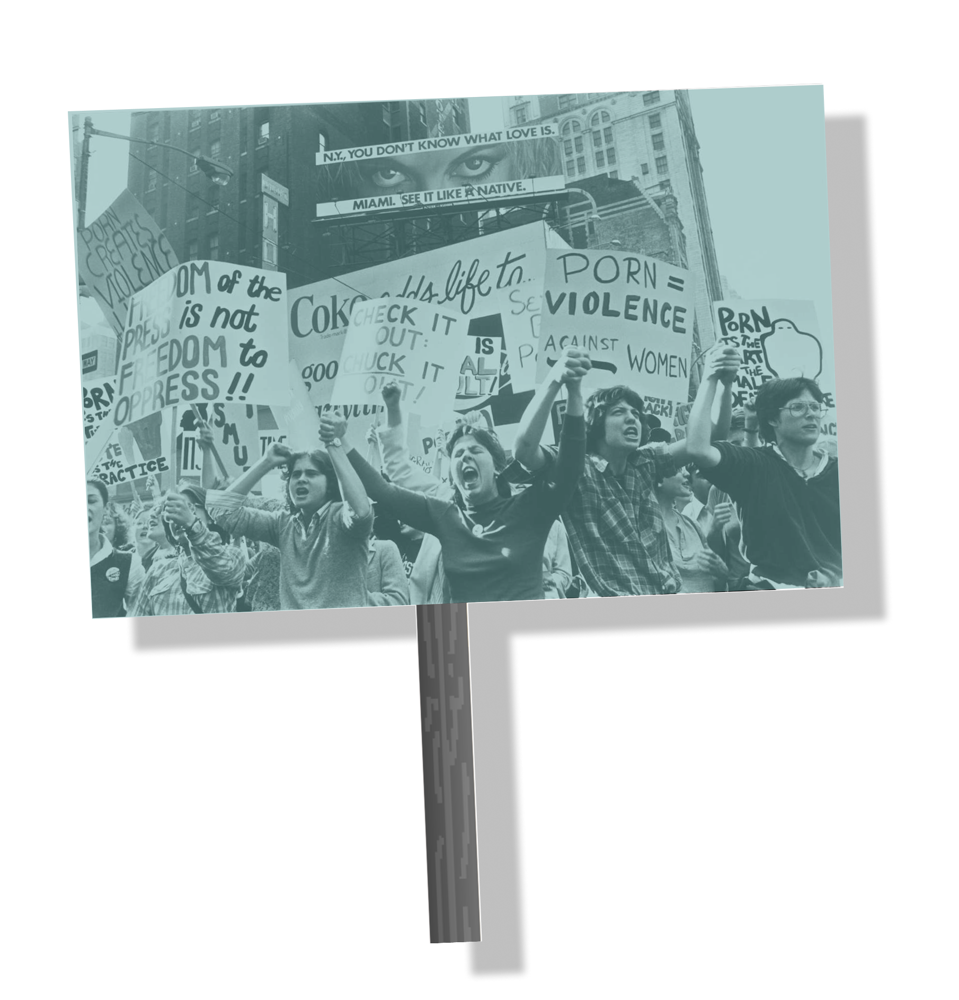
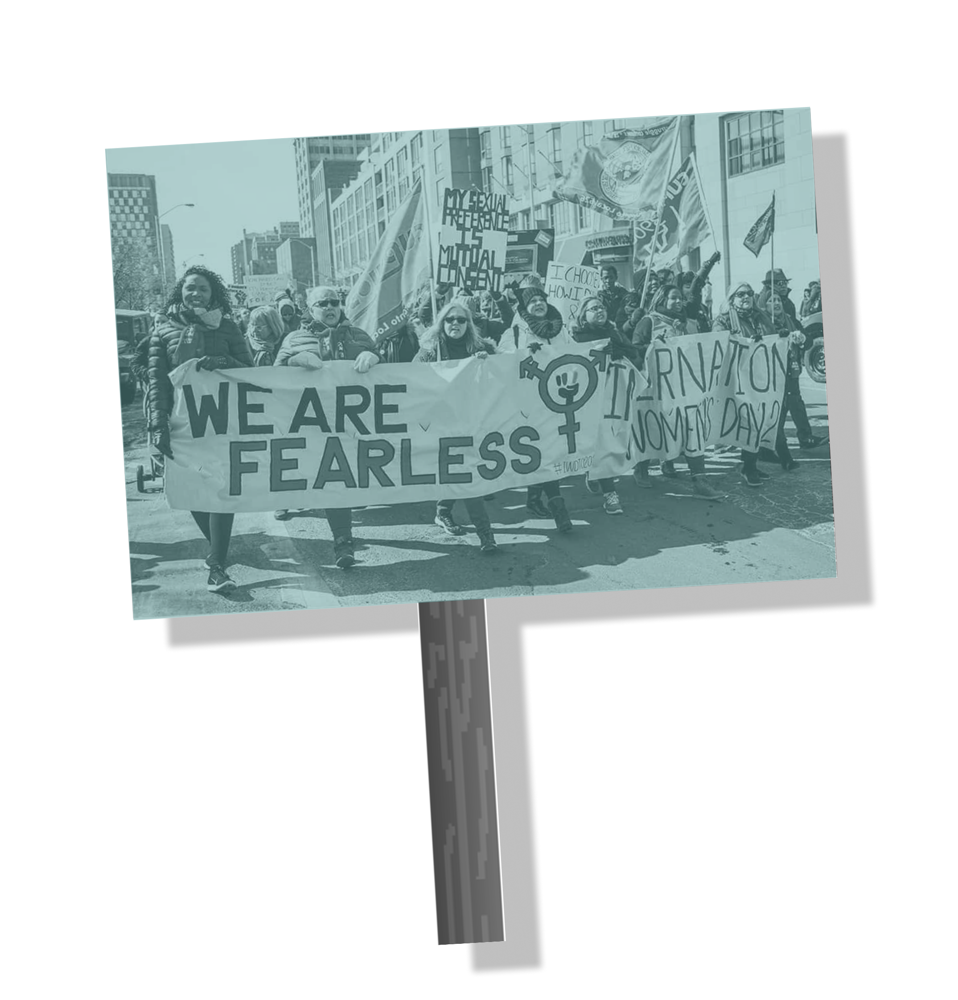
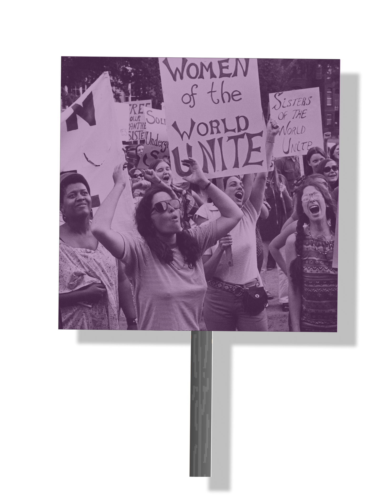
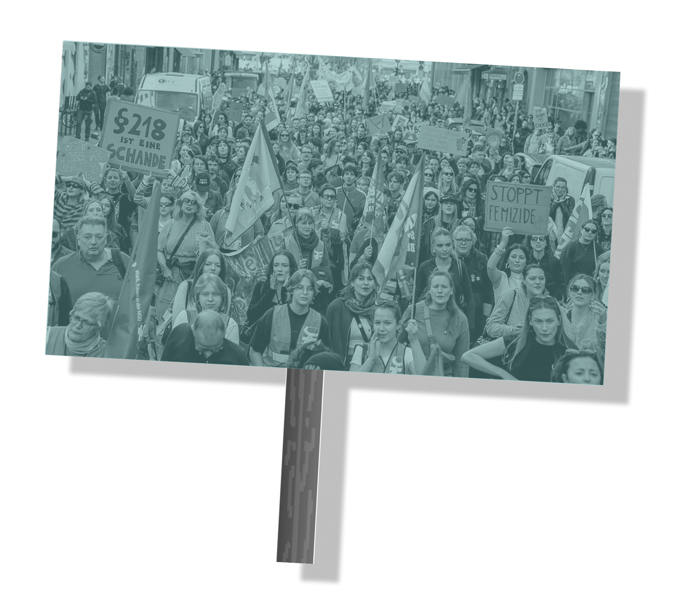
The digital landscape is becoming more and more polarised. Echo chambers are formed through algorithms and result in the reinforcement of already existing biases. This paired with rage bait content, which deliberately provokes anger, users are starting to watch more controversial takes and slowly start to identify themselves with these viewpoints.
Generally we’re used to an ideological divide between generations but now we’re seeing something new: An increasing divide in opinions on gender equality between Gen-Z men and women. Men are slowly becoming more conservative whilst women are becoming more liberal. With social media playing a massive role in this. According to research Gen Z men are more likely than baby boomers to believe that Feminism has done more bad than good.
The women advocate for traditional gender roles and present themselves as 1950’s housewives. The polished content romanticises the stay hat home lifestyle, prioritising child care, domestic duties and submission to their husbands. Whilst advocating for exiting the corporate lifestyle and focusing only on their families, the content creators have thousands of followers generating their own income whilst advocating for the opposite. The movement also forgets to mention the possible consequences of financial dependency and submission.
Gen Z men are being targeted with misogynistic content from a young age. With the popularity of the Manosphere contributing to the normalisation of sexist content. In the Manosphere misogynistic men promise young boys a successful and fulfilling life by following their advice. Their advice is based on a believe that we live in a rigged system, which is built against men. They’re advocating to a return of traditional and patriarchal gender roles whilst also focusing on tactics how to manipulate women and often reducing women to sexual objects to be conquered.
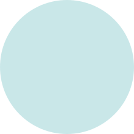
Both Movements reflect a sense of alienation from society.
People often feel like our modern economic and social structures aren’t working for them anymore.
Content creators exploit those fears by selling the idea of a simpler (Tradwives) and more successful life (Manosphere).
Both movements are promoting traditional gender roles as the solution
A political landscape dominated by men result in a lack of representation from half the population
women take on unpaid labour and therefor are completely dependent on their husbands
if women are excluded from the public sphere their needs and voices become invisible
A loss in autonomy for women.
Meet Mrs. Wife, her goal is it to live like a 1950’s housewife. And you can help her achieve it!
Pick and choose your schedule for the day. Think and act like the perfect Tradwife to win.
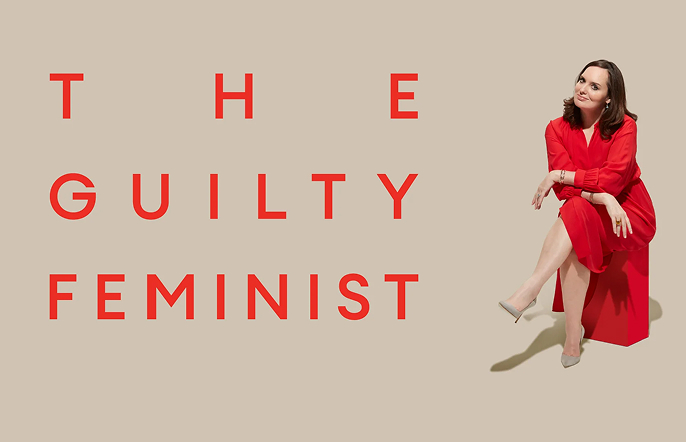
British Podcast and PodBible Awards winner
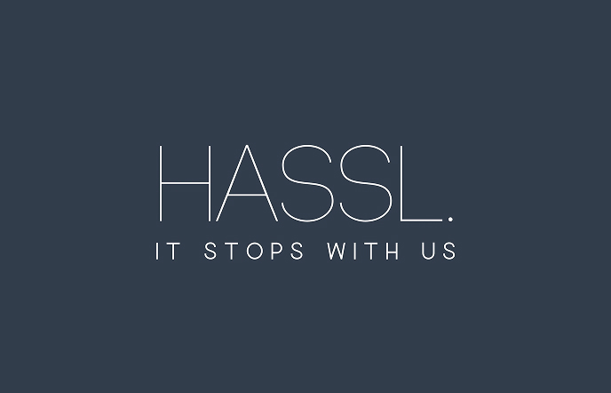
organisation tackling the root causes of violence against women
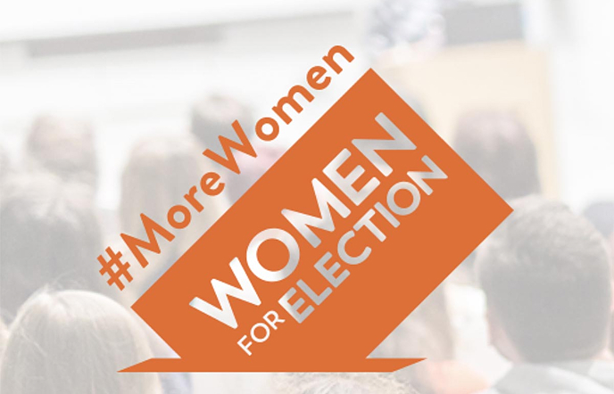
Supports women to succeed in irish politics
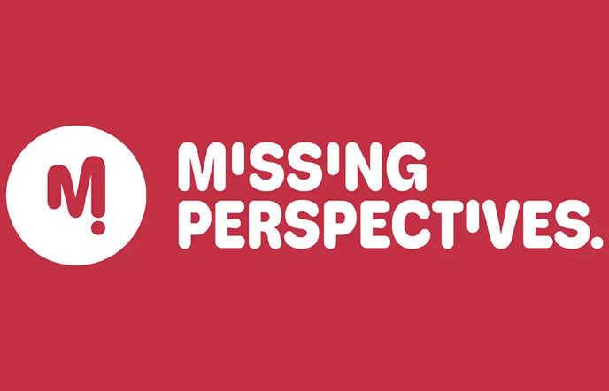
Podcasts by young women for young women
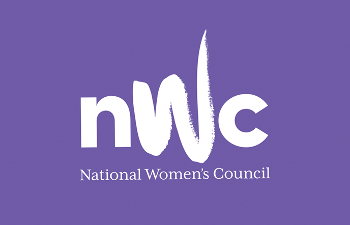
Ireland's leading organization for women and women's groups
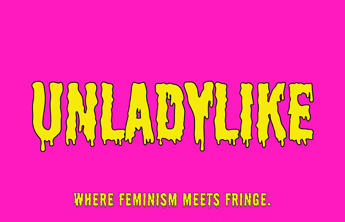
Feminist lifestyle podcast
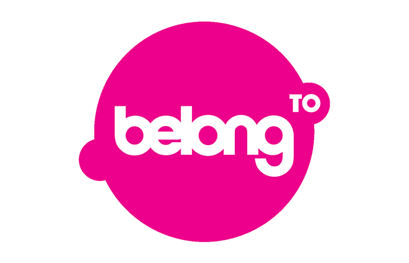
Supporting LGBTI+ Youth in Ireland
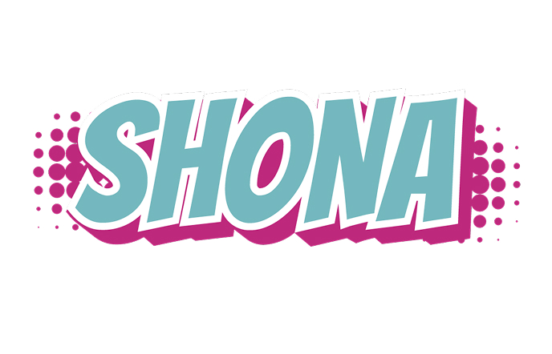
Educating, empowering and inspiring today’s girls in Ireland